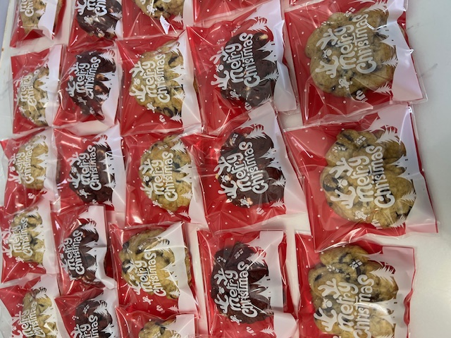

FUN FACT!
I used to bake simply as a hobby because I enjoyed creating sweet treats for my family.
Over time, my family and friends loved my baked goods so much that they encouraged me to sell them occasionally.
Baking is precise and a bit tiring, but it’s truly satisfying to create something delicious!
Click on the image to see more photos of my baked goods :)
